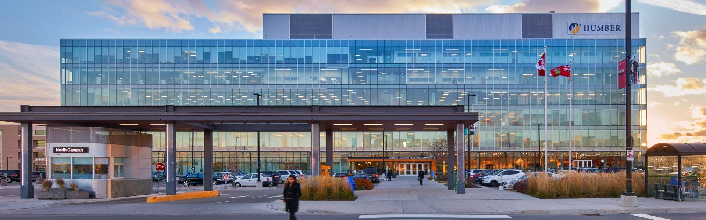

Humber College
The Humber Institute of Technology and Advanced Learning, commonly known as Humber College, is a public College of Applied Arts and Technology in Toronto, Ontario, Canada. Founded in 1967, Humber has three main campuses: the Humber North campus, the Lakeshore campus, and the Humber Orangeville campus.
| HUMBER COLLEGE | ||||
| North | ||||
| Lakeshore | ||||
| Orangeville | ||||
| IGS | ||||
| INTAKES | ||||
| September, January, May | ||||
| Program | Credential | Intake | Campus | Duration |
| 3D Modelling and Visual Effects Production | Certificate | January, September | North | 1 year |
| Accounting, Bachelor of Commerce | Bachelor Degree | January, September | Lakeshore | 4 years |
| Accounting, Business | Diploma | January, May, September | North | 2 years |
| Accounting, Business Administration | Advanced Diploma | January, May, September | North | 3 years |
| Acting for Film and Television | Diploma | September | Lakeshore | 2 years |
| Addictions and Mental Health | Post - Graduate | September | Lakeshore | 1 year |
| Addictions and Mental Health, BSc | Bachelor Degree | September | Lakeshore | 4 Years |
| Advanced Chocolate and Confectionery Artistry | Post - Graduate | September | North | 1 year |
| Advertising & Graphic Design | Diploma | January, September | Lakeshore | 2 years |
| Advertising – Account Management | Post - Graduate | September | Lakeshore | 1 year |
| Advertising – Media Management | Post - Graduate | September | Lakeshore | 1 year |
| Advertising and Marketing Communications | Diploma | September | Lakeshore | 2 years |
| Advertising Copywriting | Post - Graduate | September | Lakeshore | 1 year |
| Advertising-Art Direction | Post - Graduate | September | Lakeshore | 1 year |
| Alternative Dispute Resolution | Post - Graduate | January, September | Lakeshore | 1 year |
| Animation – 3D | Advanced Diploma | September | North | 3 years |
| Architectural Technology | Advanced Diploma | January, September | North | 3 years |
| Art Foundation | Certificate | September | Lakeshore | 1 year |
| Arts Administration and Cultural Management | Post - Graduate | September | Lakeshore | 1 year |
| Baking and Pastry Arts Management | Diploma | January, September | North | 2 years |
| Behavioural Science, Bachelor of | Bachelor Degree | September | Lakeshore | 4 years |
| Biotechnology | Diploma | January, September | North | 2 years |
| Broadcast Television/Videography | Diploma | January, September | North | 2 years |
| Broadcasting – Radio | Diploma | September | North | 2 years |
| Building Construction Technician | Diploma | September | North | 2 years |
| Business Administration | Advanced Diploma | January, May, September | North, Lakeshore | 3 years |
| Business Administration (Co-op) | Advanced Diploma | January, September | Lakeshore | 3 years |
| Business Insights and Analytics | Post - Graduate | January, May, September | IGS, Lakeshore | 2 Years |
| Business Management | Diploma | January, May, September | North, Lakeshore | 2 years |
| Cabinet Making | Certificate | January, September | North | 1 year |
| Carpentry and Renovation Technician | Diploma | January, September | North | 1 year |
| Carpentry and Renovation Techniques | Certificate | September | North | 1 year |
| Child and Youth Care | Advanced Diploma | January, September | Lakeshore | 3 years |
| Child and Youth Care – Accelerated | Advanced Diploma | September | Lakeshore | 2 years |
| Child and Youth Care, Bachelor of | Bachelor Degree | September | Lakeshore | 4 years |
| Civil Engineering Technology | Advanced Diploma | January, September | North | 3 years |
| Cloud Computing | Post - Graduate | January, September | North | 1 Yesr |
| Comedy: Writing and Performance | Diploma | September | Lakeshore | 2 years |
| Community and Justice Services | Diploma | January, September | Lakeshore | 2 years |
| Community Development, Bachelor of | Bachelor Degree | September | Lakeshore | 4 years |
| Community Integration through Co-operative Education (CICE) | Post - Graduate | September | North | 2 years |
| Computer and Network Support Technician | Diploma | January, September | North | 2 years |
| Computer Engineering Technology | Advanced Diploma | January, September | North | 3 years |
| Computer Programmer | Diploma | September | North | 2 years |
| Construction Engineering Technology | Advanced Diploma | September | North | 3 years |
| Content Strategy | Post - Graduate | January, September | Lakeshore | 1 year |
| Cosmetic Management | Diploma | January, September | North | 2 years |
| Creative Advertising | Bachelor Degree | September | Lakeshore | 4 years |
| Creative Book Publishing | Post - Graduate | May | Lakeshore | 1 semester |
| Criminal Justice, Bachelor of Social Science | Bachelor Degree | September | Lakeshore | 4 years |
| Culinary Management | Diploma | January, September | North | 2 years |
| Culinary Skills | Certificate | January, September | North | 1 year |
| Design | Bachelor Degree | September | North | 4 years |
| Design Foundation | Certificate | January, September | North, Orangeville | 1 year |
| Developmental Services Worker | Diploma | September | Lakeshore | 2 years |
| Developmental Services Worker – Accelerated | Diploma | September | Lakeshore | 1 year |
| Digital Business Management, Bachelor of Commerce | Bachelor Degree | January, September | Lakeshore | 4 years |
| Digital Communications | Bachelor Degree | September | Lakeshore | 4 years |
| Early Childhood Education | Diploma | January, May, September | North | 2 years |
| Early Childhood Education – Special Needs | Post - Graduate | September | North | 1 year |
| Electrical Engineering Technician – Control Systems | Diploma | January, September | North | 2 years |
| Electrical Engineering Technology – Control Systems | Advanced Diploma | January, September | North | 3 years |
| Electrical Techniques | Certificate | January, September | North | 1 year |
| Electromechanical Engineering Technician | Diploma | January, September | North | 2 years |
| Electromechanical Engineering Technology | Advanced Diploma | January, September | North | 3 years |
| Electronics Engineering Technician | Diploma | January, September | North | 2 years |
| Electronics Engineering Technology | Advanced Diploma | January, September | North | 3 years |
| Emergency Telecommunications | Post - Graduate | January, September | North | 1 semester |
| Engineering – Information Systems Engineering | Bachelor Degree | September | North | 4 years |
| Engineering – Mechatronics | Bachelor Degree | September | North | 4 years |
| Engineering – The Built Environment | Bachelor Degree | September | North | 4 years |
| Enterprise Software Development | Post - Graduate | September | North, IGS | 1 year |
| Entrepreneurial Enterprise, Business Management | Post - Graduate | September | Lakeshore | 1 year |
| Esthetician/Spa Management | Diploma | January, September | North | 2 years |
| Event Management | Post - Graduate | September | Lakeshore | 1 year |
| Exercise Science and Lifestyle Management | Post - Graduate | September | North | 1 year |
| Fashion Arts and Business | Diploma | January, September | North | 2 years |
| Fashion Management and Promotions | Post - Graduate | September | Lakeshore | 1 year |
| Fashion Management, Bachelor of Commerce | Bachelor Degree | January, September | Lakeshore | 4 years |
| Film and Media Production | Bachelor Degree | September | Lakeshore | 4 years |
| Film and Multiplatform Storytelling | Post - Graduate | September | Lakeshore | 1 year |
| Film and Television Production | Advanced Diploma | September | North | 3 years |
| Finance, Bachelor of Commerce | Bachelor Degree | January, September | Lakeshore | 4 years |
| Financial Planning | Post - Graduate | May, September | Lakeshore, IGS | 1 year |
| Financial Services, Business Management | Diploma | January, September | Lakeshore | 2 years |
| Fire Services | Diploma | September | North | 2 years |
| Fitness and Health Promotion | Diploma | January, May, September | North | 2 years |
| Food and Nutrition Management | Diploma | September | North | 2 years |
| Forensic Identification | Post - Graduate | September | Lakeshore | 1 year |
| Fundraising Management | Post - Graduate | September | Lakeshore | 1 year |
| Fundraising Management | Post - Graduate | September | Lakeshore | 1 year |
| Funeral Director Class 1 (Embalming) | Diploma | September | North | 2.5 years |
| Funeral Director Class 2 (Non-Embalming) | Diploma | September | North | 2 years |
| Game Programming | Advanced Diploma | September | North | 3 years |
| General Arts and Science – College Transfer | Certificate | January, September | Lakeshore,North,Orangeville | 1 year |
| General Arts and Science – Technology | Certificate | September | North | 1 year |
| General Arts and Science – University Transfer (Certificate) | Certificate | January, September | Lakeshore,North,Orangeville | 1 year |
| General Arts and Science – University Transfer (Diploma) | Diploma | January, September | Lakeshore,North | 2 years |
| Global Business Management | Post - Graduate | January, May, September | Lakeshore, IGS | 2 years |
| Graphic Design | Advanced Diploma | September | North | 3 years |
| Graphic Design for Print and Web | Certificate | January, September | North | 1 year |
| Healthcare Management, Bachelor of Commerce | Bachelor Degree | January, September | Lakeshore | 4 years |
| Heating, Refrigeration and Air Conditioning Technician | Diploma | January, September | North | 2 years |
| Heating, Refrigeration and Air Conditioning Technology | Advanced Diploma | January, September | North | 3 years |
| Hospitality – Event Management | Diploma | September | North | 2 years |
| Hospitality – Hotel and Restaurant Operations Management | Diploma | January, September | North | 2 years |
| Hospitality and Tourism Management, Bachelor of Commerce | Bachelor Degree | January, September | Lakeshore | 4 years |
| Hospitality and Tourism Operations Management | Post - Graduate | September | North | 1 year |
| Human Resources Management | Post - Graduate | January, May, September | Lakeshore, IGS | 1 year |
| Human Resources Management, Bachelor of Commerce | Bachelor Degree | January, September | Lakeshore | 4 years |
| Industrial Design | Bachelor Degree | September | North | 4 years |
| Industrial Woodworking Technician | Diploma | January, September | North | 1 year |
| Information Technology Solutions | Post - Graduate | January, May, September | North, IGS | 2 years |
| Insurance Management – Property and Casualty | Post - Graduate | January, September | North, IGS | 1 year |
| Interior Decorating | Diploma | January, May, September | North | 2 years |
| Interior Design | Bachelor Degree | September | North | 4 years |
| International Business, Bachelor of Commerce | Bachelor Degree | January, September | Lakeshore | 4 years |
| International Development | Post - Graduate | September | Lakeshore | 1 year |
| International Development, Bachelor of | Bachelor Degree | September | Lakeshore | 4 years |
| Jazz Performance – Introduction to Commercial Jazz – Woodwind | Certificate | September | Lakeshore | 1 year |
| Journalism | Advanced Diploma | September | North | 3 years |
| Journalism | Bachelor Degree | September | Lakeshore | 4 years |
| Journalism (Graduate Certificate) | Post - Graduate | September | North | 1 year |
| Landscape Technician | Diploma | September | North | 2 years |
| Law Clerk | Diploma | January, May, September | North | 2 years |
| Management Studies, Bachelor of Commerce | Bachelor Degree | January, September | Lakeshore | 4 years |
| Marketing Management | Post - Graduate | January, May, September | Lakeshore, IGS | 1 year |
| Marketing, Bachelor of Commerce | Bachelor Degree | January, September | Lakeshore | 4 years |
| Marketing, Business | Diploma | January, May, September | North | 2 years |
| Massage Therapy | Advanced Diploma | January, September | North | 3 years |
| Mechanical Engineering Technician | Diploma | January, September | North | 2 years |
| Mechanical Engineering Technology | Advanced Diploma | January, September | North | 3 years |
| Mechanical Techniques – Millwright | Certificate | January, May, September | North | 1 year |
| Media Communications | Diploma | January, September | Lakeshore,North | 2 years |
| Media Foundation | Certificate | September | North | 1 year |
| Multimedia Design and Development | Diploma | September | North | 2 years |
| Music Business | Post - Graduate | May | Lakeshore | 1 year |
| Music Composition | Post - Graduate | September | Online | 1 year |
| Music, Introduction to Commercial Jazz Music – Bass | Certificate | September | Lakeshore | 1 year |
| Music, Introduction to Commercial Jazz Music – Cello | Certificate | September | 1 year | |
| Music, Introduction to Commercial Jazz Music – French Horn | Certificate | September | Lakeshore | 1 year |
| Music, Introduction to Commercial Jazz Music – Guitar | Certificate | September | Lakeshore | 1 year |
| Music, Introduction to Commercial Jazz Music – Keyboard | Certificate | September | Lakeshore | 1 year |
| Music, Introduction to Commercial Jazz Music – Percussion | Certificate | September | Lakeshore | 1 year |
| Music, Introduction to Commercial Jazz Music – Trombone | Certificate | September | Lakeshore | 1 year |
| Music, Introduction to Commercial Jazz Music – Trumpet | Certificate | September | Lakeshore | 1 year |
| Music, Introduction to Commercial Jazz Music – Tuba | Certificate | September | Lakeshore | 1 year |
| Music, Introduction to Commercial Jazz Music – Violin | Certificate | September | Lakeshore | 1 year |
| Music, Introduction to Commercial Jazz Music – Vocal | Certificate | September | Lakeshore | 1 year |
| Nursing – Regular, Bachelor of | Bachelor Degree | September | North | 4 years |
| Nutrition and Healthy Lifestyle Promotion | Diploma | September | North | 2 years |
| Occupational Therapist Assistant & Physiotherapist Assistant | Diploma | September | North | 2 years |
| Paralegal | Post - Graduate | January, September | North | 1 year |
| Paralegal Education | Diploma | January, September | North | 2 years |
| Paralegal Studies, Bachelor of Applied Arts | Bachelor Degree | September | Lakeshore | 4 years |
| Paramedic | Diploma | September | North | 2 years |
| Personal Support Worker | Certificate | September | North | 1 year |
| Pharmacy Technician | Diploma | September | North | 2 years |
| Photography | Diploma | September | North | 2 years |
| Plumbing Techniques | Certificate | January, May, September | North | 1 year |
| Police Foundations | Diploma | January, September | Lakeshore | 2 years |
| Post-Production | Post - Graduate | September | North | 1 year |
| Practical Nursing | Diploma | September | North | 2 years |
| Pre-Health Sciences Pathway to Advanced Diplomas and Degrees | Certificate | September | North | 1 year |
| Pre-Service Firefighter Education and Training | Certificate | January, May | North | 1 year |
| Professional Accounting Practice | Post - Graduate | January, September | North | 1 year |
| Professional Golf Management, Business Administration | Advanced Diploma | September | North | 3 years |
| Professional Writing and Communications | Post - Graduate | September | Lakeshore | 1 year |
| Project Management | Post - Graduate | January, May, September | North, IGS | 1 year |
| Protection, Security and Investigation | Diploma | January, September | Lakeshore | 2 years |
| Public Administration | Post - Graduate | September | Lakeshore | 1 year |
| Public Relations | Advanced Diploma | September | Lakeshore | 3 years |
| Public Relations | Bachelor Degree | September | Lakeshore | 4 years |
| Public Relations (Graduate Certificate) | Post - Graduate | January, September | Lakeshore | 1 year |
| Radio and Media Production | Post - Graduate | September | North | 1 year |
| Recreation and Leisure Services | Diploma | September | North | 2 years |
| Regulatory Affairs | Post - Graduate | September | North | 1 year |
| Research Analyst | Post - Graduate | January, May, September | Lakeshore, IGS | 1 year |
| Social Service Worker | Diploma | January, September | Orangeville,Lakeshore | 2 years |
| Sport Business Management | Post - Graduate | September | North | 1 year |
| Sport Management | Advanced Diploma | September | North | 3 years |
| Supply Chain Management | Post - Graduate | January, May, September | North, IGS | 1 year |
| Supply Chain Management, Bachelor of Commerce | Bachelor Degree | January, September | Lakeshore | 4 years |
| Sustainable Energy and Building Technology | Advanced Diploma | September | North | 3 years |
| Systems Navigator | Post - Graduate | January, September | North | 1 year |
| Teaching English as a Second Language (TESL) | Post - Graduate | September | Lakeshore | 1 year |
| Television Writing and Producing | Post - Graduate | September | Lakeshore | 1 year |
| Theatre Arts – Performance | Advanced Diploma | September | Lakeshore | 3 years |
| Theatre Arts – Production | Diploma | September | Lakeshore | 2 years |
| Tourism – Travel Services Management | Diploma | January, September | North | 2 years |
| Traditional Chinese Medicine Practitioner | Advanced Diploma | September | North | 3 years |
| Transfer Service Sales Representative | Certificate | January, September | North | 1 year |
| Urban Arboriculture – Tree Care | Certificate | January, September | North | 1 year |
| User Experience (UX) Design | Post - Graduate | September | North | 1 year |
| Visual and Digital Arts | Diploma | September | Lakeshore | 2 years |
| Web Design and Development | Certificate | January, September | North | 1 year |
| Web Design and Interactive Media | Advanced Diploma | September | North | 3 years |
| Web Development | Post - Graduate | September | North | 1 year |
| Welding Techniques | Certificate | January, May, September | North | 1 year |
| Wellness Coaching | Post - Graduate | September | North | 1 year |
| Wireless Telecommunications | Post - Graduate | January, September | North | 1 year |
| Workplace Health and Wellness, Bachelor of Health Sciences | Bachelor Degree | September | North | 4 years |